APRS Meteor Scatter Email System
APRS Meteor Scatter Email System
APRS Meteor Scatter Email System
APRS Meteor Scatter Email System
This MS Email page is a new direction from the original METEORS.TXT documentation. The bursty mode of APRS works well with Meteor communications, but we dont see these long shots on 144.39 because the channel is busy most of the time and maskes these gems. Also, 6 meters works so much better that that is where the greatest success is and because it is normally a quiet frequency. But 2m works too if you go to a quiet freq. Remember MS works all the time year round 24/7/365 with openings of a few seconds every few hours. Of course this improves dramatically during meteor showers, but the routine is also there.
METEOR SHOWERS: Anytime, and especially during meteor showers tuen to these frequencies and if you have a beam point to distance population densities about 600 to 12000 miles away, set your beacon to a HIGH rate and capture any packets you receive. Overnight is the best time for meteors. Check your log and see what you got.
50.620 MHz 6 meter MS channel
147.585 MHz 2 meter MS channl
Six meters is about 10 times better than 2 meters, but both can work. Th original APRSdos had a METERO mode built in that would send continuous packets for 15 seconds out of every minute on schedule with the four quadrants of the country, and then listen for the other three quadrants for the other 45 seconds. But without that kind of systematic control, you can also just set your beacon rate to 10 seconds and see what happens. Check your log the next morning.
SPECIAL 6m PROJECT PROPOSAL: The operational scenario for this project is a minimal email capability out of an area for First Responders back to the internet. . Maximum wait times on the order of a minute or less should be possible. . This capability would be available immediately before phone lines, internet, satellite, and other wireless infrastructure are re-established. An example would be mobile units enroute and arriving in the Katrina disaster area. This Meteor Scatter basic communications link would give them this low data rate, but reliable channel.
The self plotting of APRS packets and global connectivity of the APRS-Internet System (APRS-IS) makes it ideal for an Emergency Meteor Scatter Email System. . Using 100 Watt 6 Meter radios and standard AX.25 packet, it should be possible to send outgoing APRS short text-message Emails and position/status reports reliably. . There are several key factors making this possible.
The map below only shows the receiver gain plots from 5 possible IGates, but it is easy to visualize how dozens of IGates with their own coverage areas could blanket the USA with Meteor Scatter Receive sites. . I only used five to keep the map from being too cluttered. Hopefully we would enlist dozens of 6m monitoring IGates. . It is this large distribution of receive sites that multiply the usually low probabilities of Meteor Scatter communication up into the useful range of a few packets per miunte. . This is an IDEAL APRS project beacuse the entire infrastructure exists already.
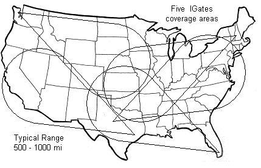
ANTENNAS: . Although the meteor scatter path is long term reliable, the signals are weak when they do occur, so high gain antennas are desireable. . Fortunately, a high gain antenna (in one fixed direction) can be errected as easily as stringing a long wire antenna. . Some EZNEC models are shown below. The first plots are for a 200' piece of wire over perfect ground. . It is missleading because the AZ plot is showing the Main beam but it is up at 18 degrees which is not very good for MS. The gain lobe is really a cone around the wire.
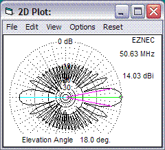 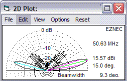
The next plots, the length is reduced to a more realistic 120 foot long wire and a real ground which absorbs energy. Also, in the next model, the backward wave is canceled with the terminating resistor. This resistor does not impact forward gain, but eliminates standing waves and the backward lobe making the tuning much easier. . This plot is also a lower elevation slice and so the two lobes of the cone are more visible.
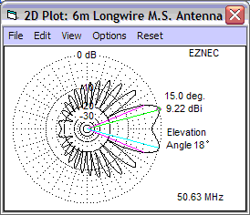 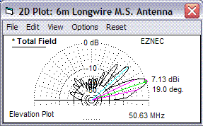
The wire is fed 1/4 wave from one end with a series 1/4 wave section of two 70 Ohm line lines to match the 400 ohm impedance of the long wire. One quarter wave from the far end, a 400 ohm resistor suitable for half the TX power is located to absorb energy in the unused direction making this a unidirectional wire. For stations in the middle of the country, the resistor is not needed since a bidirectional antenna would be desirable. But without the resistor, there are standing waves, and tuning is more critical.
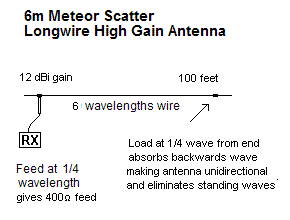 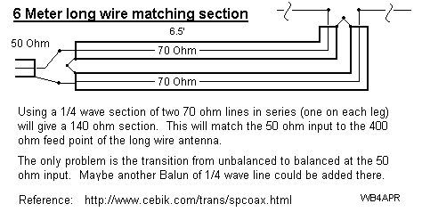
The map below shows why the use of a long wire antenna gain will work well for Meteor Scatter because we do not need gain exactly along the line between two stations, we just need their gain patterns to be illuminating the same part of the sky no matter where it is. . In this plot, the two major lobes show very clearly because this is taken at a 5 degree elevation slice.
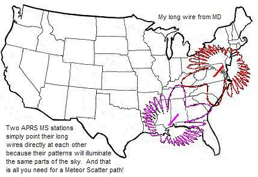
Radios: . Mike Chisena, KB2ZEV of the AMRAD club has found a source of 110 Watt radios and is painstakingly converting each one to 6 meters for possible use in this projct. Here is a photo of a complete radio set (and the stack it came from):
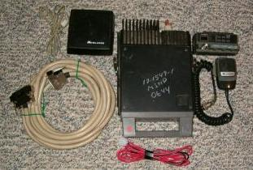 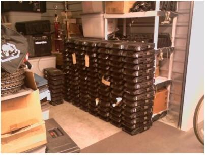
Inside top view,
Control Head,
Inside bottom view,
Inside PA view, and another
inside top view
The map below shows the successful reported packets during the 1995 persieds meteor shower. . Although meteor showers show improved performance, the plot below is for 2 meters, and the results on 6 meters is usually an order of magnitude more sucessful. This balances out well with routine meteor activity which is active 24/7/365. . By transmitting the outgoing email repeatedly over 10 minutes or so, the successful reception by an IGate somewhere is virtually guaranteed.
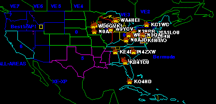
If you want more proof that Meteor Scatter works for APRS and to see easy ways to monitor for packets, please see the original original APRS meteor Scatter documentation, and the original APRS METEOR.TXT file for details. There was also a write-up about the first LEONIDS.TXT.
DEVELOPMENT PLAN: . Here is a possible course of action to develop this meteor scatter communications network.
EMAIL PROTOCOL: . The protocol for sending email via APRS is well established and operational. . This was developed by the Sproul Brothers and runs on a computer at Rutgers University that monitors the global APRS internet channel and pulls out any messages addressed to EMAIL. It wraps them in a standard internet mail protocol and injects them into the normal Email system. The format is simply:
WB4APR>APRSxx::EMAIL____:XXXXXX@YYYYYY.ZZZZ text goes here, any length (max one line)...
This is a standard APRS message format, except the destination field simply contains the word EMAIL padded to 9 spaces and the first word of the message body is an email address. . This format works well. A packet transmitted anywhere in the world in this format on any APRS channel including the satellite channel will result in an email to the intended XXXXX@YYYY.ZZZ recepient. See the Satellite Emergency Email System.
IMPROVED MS PROTOTOL: . Since brevity is paramount in MS packets, the above format can be improved slightly for better efficiency. The following ideas are proposed to improve Email efficiency. Lets assume a 64 byte text message. The original format then takes 25 bytes of overhead and 18 bytes of Eaddress for an efficiency of 60%.
This format signals the Email engine to capture these unique APARRL, APJUNO, APASAT formatted APRS messages as EMAILS, and to also then preload any of the most commmonly used ham radio Email addresses or aliases. In this case, the first word of the text message now only contains the unique part of the email address and not the common part of it. . Here is an example:
WB4APR>APARRL::W3XY text:goes here, any length (max one line)...
Notice that the two colons (:) still bracket the first 9 bytes of the APRS message format to keep it compatible with the rest of the APRS message system and all existing client software and radio firmware. . But now this special MS Email engine converts the special APARRL to W3XY@ARRL.NET and the rest of the format is the message text (ignoring the required colon in the 10th byte position). . With this improvement, all redundant bytes are eliminated and the only overhead is 4 bytes or so plus the sender and receivers calls.
Other specialized keyword APXXXX's could be designated as needed. . That's pretty efficient. . The total length of this packet at 1200 baud is just 0.63 seconds, which is quite practical for 6m Meteor scatter.
RETURN MESSAGING: . The above formats are standard APRS message formats supported by the existing APRS system, and IGate infrastructure. . It full fills the original objective to get an emeregency Email out of a disaster area as long as the transmitting station transmits the packet repeatedly for X minutes to get a high probabiliy of receipt by any one of the dozens of country wide APRS receiving IGates... But this part of the system has no mechanism for getting a response back into the affected area. . That response system will take specialized software.
To get a message back into the affected area, the IGates must have new firmware to be able to capture an APRS message from the APRS-Internet system and to then schedule it for transmission back via MS. . Here is my proposal for that process.
Further, if there is no MS traffic pending, these IGates will still periodically key up with a PILOT packet say once every hour for X minutes as a test packet. This IGate will monitor the APRS-IS for its own successes, and use this average value to determine the amount of time to transmit traffic to get the 97% average success rate or so... This data will also be a way of performance monitoring of the entire APRS Meteor Scatter system!
PERFORMANCE MONITORING: . Imagine the data we can learn using this self test feature of the APRS MS system. With this system running 24/7, we will learn very quickly the value of this system and have dynamic proof of its probabiliites. . This can be fun!
WB4APR, Bob
{kind=link}
{kind=link}
{kind=link}
{kind=link}
{kind=link}
{kind=link}
{kind=link}